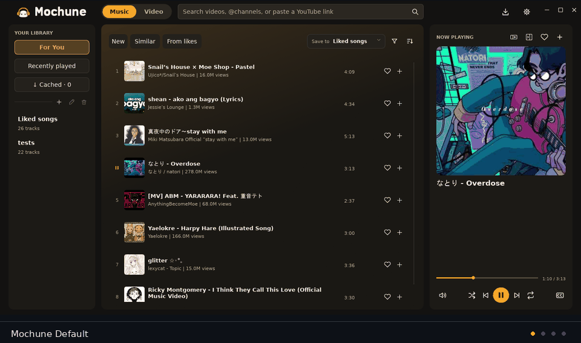

MUSIC.
VIDEO.
ANIME.
MOVIES.
MANGA.
ONE NATIVE PLAYER.
A yt-dlp player wired in Rust and Slint — no browser engine, no bundled bloat. Leave a mode and its resources are released on the spot.
alpha (0.1.1) — report bugs · all files + sha256

SWITCH THE WHOLE INTERFACE, KILL THE REST.
The mode picker hands everything over to the next mode. Nothing from the previous one keeps running.
$ mochune --list-modes music · playlists.md · lyrics.lrc · shuffle · mini-dock video · quality-select · captions · cues · home-feed (lazy) anime · sub/dub · source-qualities · auto-next-episode movies · vixsrc [wikidata + tmdb-id] · dramachi manga · mangadex · mangapill · progress: saved exit — mode change = clean restart, nothing resumes behind your back
RAM, MEASURED ON THE MACHINE.
Straight from the running 0.1.1 build — not marketing, published methodology.
$ mochune --status metric windows (priv-bytes) linux (rss) music ~37 MiB ~85 MiB video 720p60 ~312 MiB ~191 MiB anime 1080p ~277 MiB — movies 720p ~266 MiB — manga first page ~24 MiB —
THE MACHINE ALSO HAS RANGE.
AUDIO EFFECTS
Channel delay (0–20 ms) and an IR convolver — include the Oxy impulse or a local file.
INTERPOLATION
Experimental 2× / 60 fps GPU frame generation for 12–30 fps sources. Auto fallback.
THEMES
Colors, borders, fonts, animated GIFs. CRT, Pastel and Pixel ship with the app.
BOOKMARKS
Named folders across anime, movies and manga. Reading progress saved per series.
IMPORT / EXPORT
Library data goes with you, plus optional audio caching.
LEGACY-FRIENDLY
Existing libraries migrate intact — old profiles are never overwritten.
READ THE MAN PAGES.
- hardware decoding only — no CPU fallback
- mode changes relaunch the app
- providers can change at any time
- independent project · GPL-3.0 · not affiliated with YouTube or Google